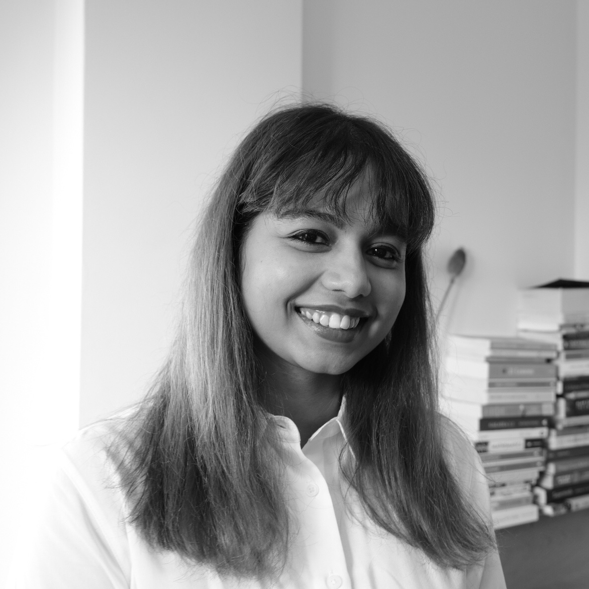
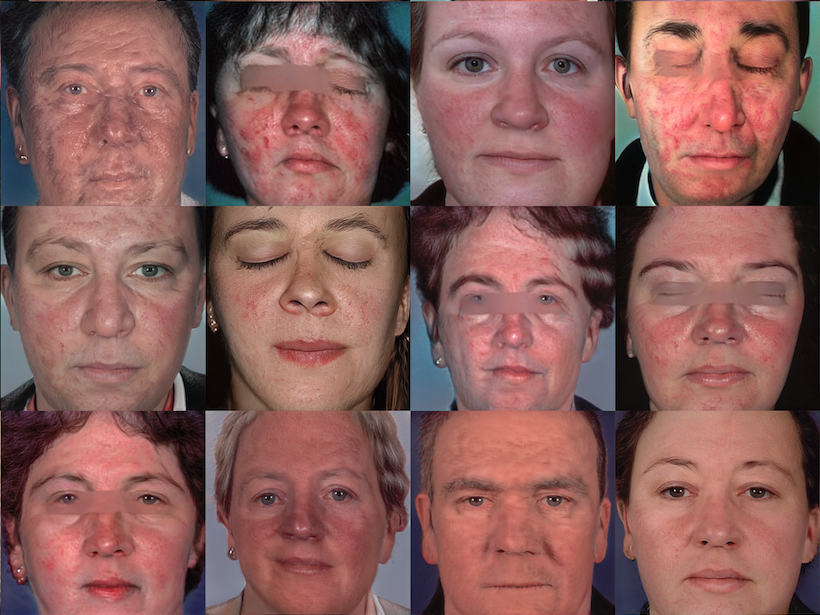
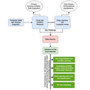
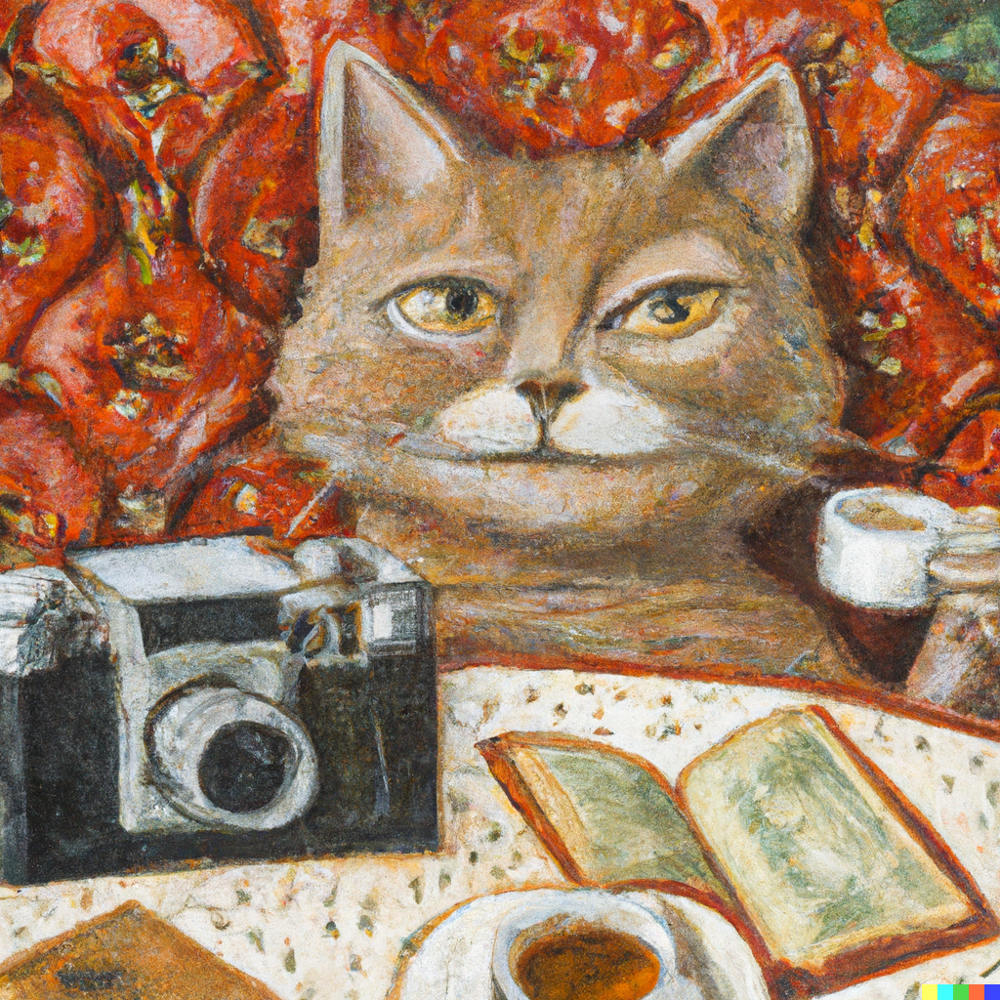

|
Anwesha Mohanty
I am a final year PhD Candidate at Dublin City University (DCU) as a part of CRT d-real programme funded by Science Foundation Ireland. I am advised by Dr. Alistair Sutherland, Dr. Marija Bezbradica and Dr. Hossein Javidnia.
In the summer of 2022, I was a Research Intern in the innovation branch of the digital analytical and research team within NHS England (NHSx).
My PhD is focused on studying a particular skin disease, i.e. Rosacea analysis with limited data using Computer Vision and Machine Learning (/Deep Learning). The main objective of my study is to attain the optimum outcome in computer-assisted disease diagnosis, mainly when the quantity of available images for the study is limited. The central gap in advancing technology and research between the medical domain and computing is primarily attributed to the scarcity of data. I am studying the intricacies of the mathematical and engineering aspects of Deep Learning models to uncover ways to extract maximum benefit from a minimal amount of data and thus enhance the efficacy of the models.
Email |
Curriculum vitae |
Google Scholar |
Github |
LinkedIn
|

|
|
Research Interest
I am particularly interested in anything that involves generative models, aka Generative AI. Additionally, I am intrigued by the existing/non-existent possibilities around training complex ML/DL models with small data (which may include a subset of various publicly accessible Big Datasets).
|
|

|
Towards Synthetic Generation of Clinical Rosacea Images with GAN Models
Anwesha Mohanty,
Alistair Sutherland ,
Marija Bezbradica,
Hossein Javidnia
33rd Irish Signals and Systems Conference (ISSC), 2022, doi: 10.1109/ISSC55427.2022.9826207
/
pdf
Considering state of-the-art StyleGAN2 with Limited Data, the purpose of this paper is to provide an attempt towards the generation of synthetic faces with Rosacea skin condition.
|
|

|
Skin Disease Analysis With Limited Data in Particular Rosacea: A Review and Recommended Framework
Anwesha Mohanty,
Alistair Sutherland ,
Marija Bezbradica,
Hossein Javidnia
IEEE Access vol. 10, pp. 39045-39068, 2022, doi: 10.1109/ACCESS.2022.3165574.
/
pdf
This study considers one of the key challenges in data acquisition and computation, viz. data scarcity. With data scarcity in mind, the possible techniques explored and discussed include Generative Adversarial Networks, Meta-Learning, Few-Shot classification, and 3D face modelling.
|
|
Responsibilities: Supervising the lab work/programming assignments, marking lab exams and reports
2022-2023
CA266 Probability and Statistics (BSc.)
2021-2022
CA266 Probability and Statistics (BSc.)
2020-2021
CA200 Quantitative Analysis for Business Decisions (BSc.)
CA266 Probability and Statistics (BSc.)
CA349 IT Architecture (BSc.)
CA660 Statistical Data Analysis (MSc.)
2019-2020
CA200 Quantitative Analysis for Business Decisions (BSc.)
CA266 Probability and Statistics (BSc.)
2018-2019
CA200 Quantitative Analysis for Business Decisions (BSc.)
CA266 Probability and Statistics (BSc.)
CA274 Programming for Data Analysis (BSc.)
|

|
I am fond of metaphors and oranges. I am also a connoisseur of speciality barista coffee and the robust flavours of Indian black tea, particularly of the Assam and Darjeeling varieties. Freshly baked pastries hold a special place in my heart. In my leisure hours, I relish immersing myself in books, lingering in bookshops, capturing moments on film, scribbling my thoughts, and discovering new cafes and restaurants. On days when I get to engage in all of these delightful pursuits, I consider it a truly fulfilling experience.
|
|
{kind=link}